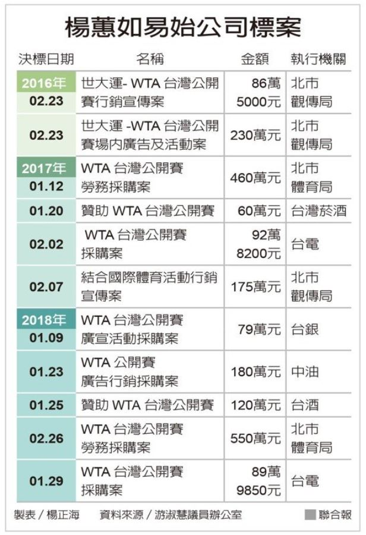
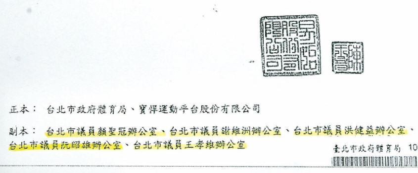

藍議員爆：「卡神」靠政府2年撈近億

「卡神」楊蕙如被控養網軍帶風向，導致駐日大阪辦事處前處長蘇啟誠輕生，外界質疑錢從何而來？台北市議員昨天揭發楊蕙如的公司藉由舉辦國際女子網球協會職業網球台灣公開賽ＷＴＡ，在二○一六年到二○一八年共取得中央和北市府十一個標案，獲補助近億元，質疑這些錢就是用來豢養網軍。
國民黨昨天強烈抨擊楊蕙如案，總統參選人韓國瑜、國民黨主席吳敦義都要求政府說明白，追查到底。立院黨團也質疑楊網軍ＩＰ部分來自立法院，要求立法院說明。

綠執政後 ＷＴＡ楊拿11標案 根據議員公布資料，二○一六年ＷＴＡ公開賽總獎金五十萬美元，二○一七、二○一八年比賽總獎金縮減為二十五萬美元；照理賽事規模縮減，總經費應下降，但卻非如此，民進黨執政後補助金額不斷攀升，二○一七年獲得四千多萬元，二○一八年五千五百多萬元，兩年標案和補助金近億元。
台北市議員游淑慧說，楊蕙如的易始公司二○○九年成立，二○一六年民進黨執政後，接觸到的政府標案大爆發，光ＷＴＡ賽事就拿到十一個政府標案，其中北市府有五個標案共一千五百多萬元，六個中央國營單位共六百多萬元。她質疑，為何民進黨上台，楊就可以取得國營企業補助？反觀二○一六年在高雄的ＷＴＡ賽事，因為是馬政府執政，就拿不到這麼多補助。
市議員徐巧芯說，ＷＴＡ公開賽的標案連台北市長柯文哲都曾覺得「怪怪的」，體育局自行提出的檢討報告也承認辦理經費應更妥適，顯示此案與市場行情不符，北市府應該徹查此案。

公文副本 給五位「謝系議員」 她說，易始公司曾發文要求北市府出具易始、市府及寶悍運動平台股份有限公司共同主辦二○一七「TAIWAN OPEN台灣公開賽」的正式函件，公文副本竟都給五位「謝（長廷）系議員」，為什麼公司與體育局的公文往來，要特別將副本給議員？還剛好都屬於謝系？難道是代表謝系議員有介入「關照」楊蕙如拿到補助？
